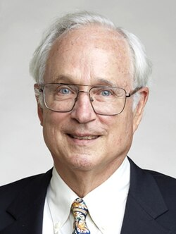
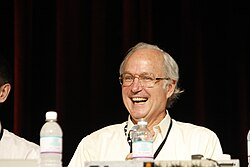

Butler Lampson | |
|---|---|
 Lampson in 2018 | |
| Born | December 23, 1943 Washington, D.C. |
| Education | Harvard University (BA) University of California, Berkeley (MS, PhD) |
| Known for | SDS 940, Xerox Alto |
| Awards |
|
| Scientific career | |
| Fields | Computer science |
| Institutions | University of California, Berkeley Xerox PARC Digital Equipment Corporation Microsoft Massachusetts Institute of Technology |
| Thesis | Scheduling and Protection in an Interactive Multi-Processor System (1967) |
| Harry Huskey | |
| Website | research.microsoft.com/lampson (archived) |
Butler W. Lampson (born December 23, 1943) is an American computer scientist best known for his contributions to the development and implementation of distributed personal computing. He won the 1992 ACM Turing Award.
After graduating from the Lawrenceville School (where in 2009 he was awarded the Aldo Leopold Award, also known as the Lawrenceville Medal, Lawrenceville's highest award to alumni), Lampson received an A.B. in physics (magna cum laude with highest honors in the discipline) from Harvard University in 1964 and a PhD in electrical engineering and computer science from the University of California, Berkeley in 1967.

During the 1960s, Lampson and others were part of Project GENIE at UC Berkeley. In 1965, several Project GENIE members, specifically Lampson and Peter Deutsch, developed the Berkeley Timesharing System for Scientific Data Systems' SDS 940 computer. After completing his doctorate, Lampson stayed on at UC Berkeley as an assistant professor (1967–1970) and associate professor (1970–1971) of computer science. For a period of time, he concurrently served as director of system development for the Berkeley Computer Corporation (1969–1971).
In 1971, Lampson became one of the founding members of Xerox PARC, where he worked in the Computer Science Laboratory (CSL) as a principal scientist (1971–1975) and senior research fellow (1975–1983). His now-famous vision of a personal computer was captured in the 1972 memo entitled "Why Alto?".[1] In 1973, the Xerox Alto, with its three-button mouse and full-page-sized monitor, was born.[2] It is now considered to be the first actual personal computer in terms of what has become the "canonical" GUI mode of operation.
All the subsequent computers built at Xerox PARC except for the "Dolphin" (used in the Xerox 1100 LISP machine) and the "Dorado" (used in the Xerox 1132 LISP machine) followed a general blueprint called "Wildflower", written by Lampson, and this included the D-Series Machines: the "Dandelion" (used in the Xerox Star and Xerox 1108 LISP machine), "Dandetiger" (used in the Xerox 1109 LISP machine), "Daybreak" (Xerox 6085), and "Dicentra" (used internally to control various specialized hardware devices).
At PARC, Lampson helped work on many other revolutionary technologies, such as laser printer design; two-phase commit protocols; Bravo, the first WYSIWYG text formatting program; and Ethernet, the first high-speed local area network (LAN). He designed several influential programming languages such as Euclid.
Following the acrimonious resignation of Xerox PARC CSL manager Bob Taylor in 1983, Lampson and Chuck Thacker followed Taylor colleague to Digital Equipment Corporation's Systems Research Center. There, he was a senior consulting engineer (1984–1986), corporate consulting engineer (1986–1993) and senior corporate consulting engineer (1993–1995). Shortly before Taylor's retirement, Lampson left to work for Microsoft Research as an architect (1995–1999), distinguished engineer (2000–2005) and technical fellow (2005–present).
Since 1987, Lampson has been an adjunct professor of electrical engineering and computer science at the Massachusetts Institute of Technology.
Lampson is often quoted as saying "Any problem in computer science can be solved with another level of indirection", but in his Turing Award Lecture in 1993, Lampson himself attributes this saying to David Wheeler.[8]
A printed interview with Lampson is published in the book Programmers at Work, edited by Susan Lammers.
{{citation}}: CS1 maint: bot: original URL status unknown (link)
.jpg){kind=link}
{kind=link}